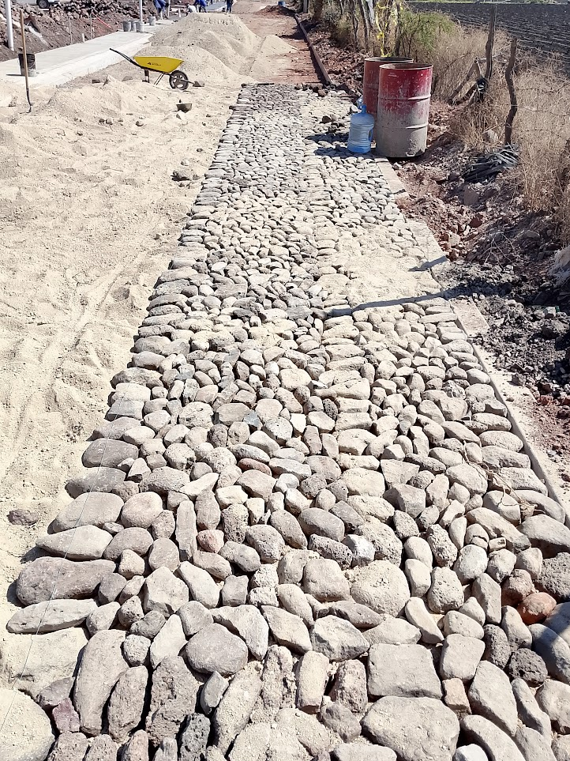
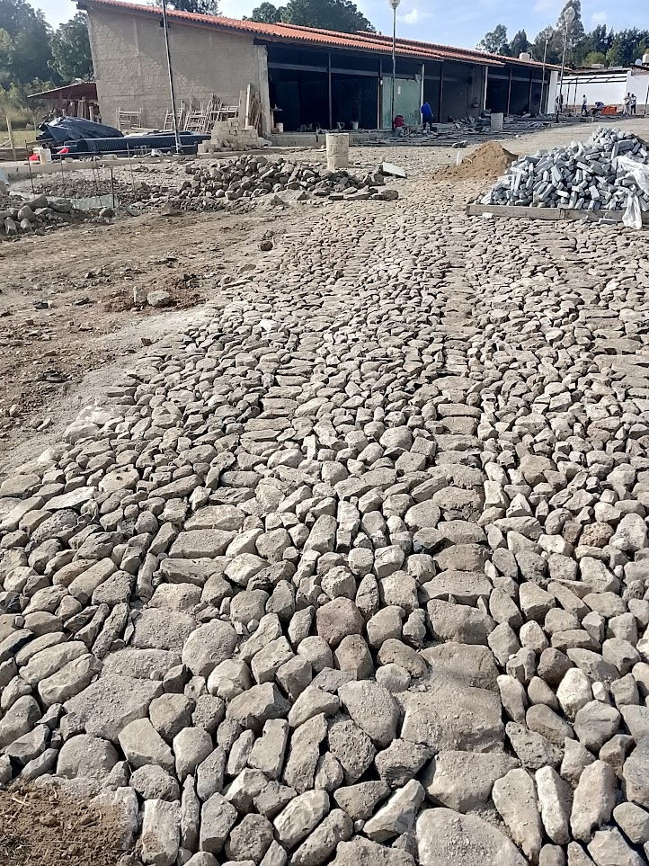
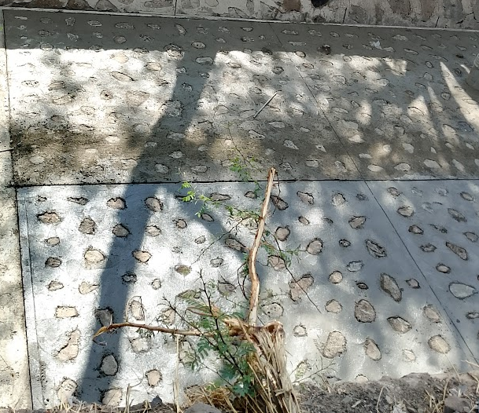
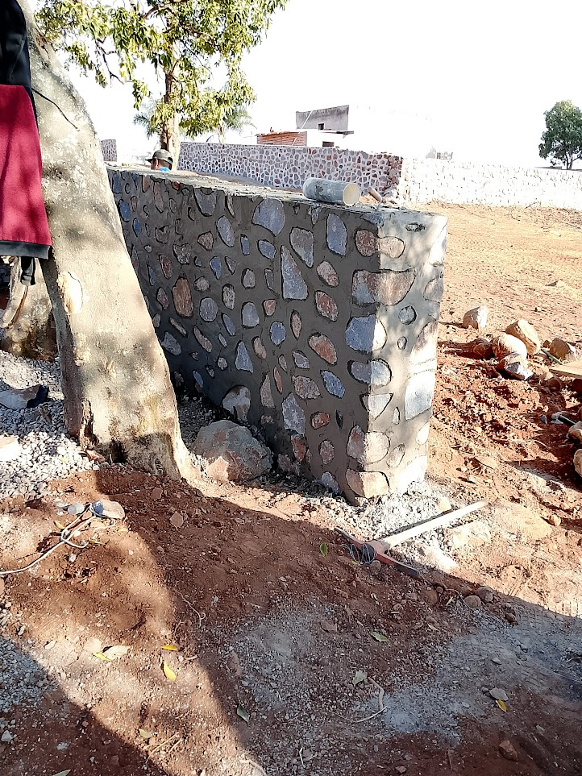
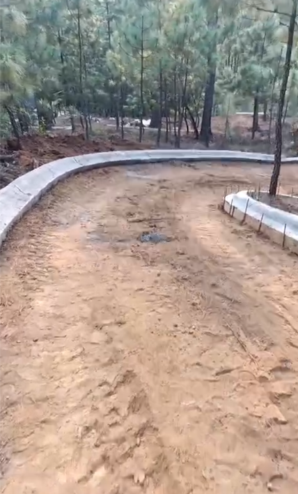

Empedrado Tradicional
Colocación de piedras artesanales sobre una base de mamposteo, con mortero y mano de obra especializada.
- Piedras naturales de cantera
- Acabado firme y uniforme
- Ideal para caminos de acceso

Empedrado tradicional, sarpeado, mamposteo y machueleo: la solución artesanal para conectar fincas, propiedades y comunidades con caminos seguros y duraderos.

Del terreno hasta la piedra final: preparamos y construimos caminos con técnicas artesanales y un control real de calidad en cada tramo. Con empedrado tradicional, sarpeado, mamposteo y machueleo para caminos de finca y rurales.
Colocación de piedras artesanales sobre una base de mamposteo, con mortero y mano de obra especializada.

Superficie de piedra irregular diseñada para caminos rurales y de finca, con buen drenaje y tracción.

Preparación de la base con material apilado que sostiene el empedrado y distribuye el peso del tránsito.

Técnicas de construcción en piedra y mampostería aplicadas a la estructura del camino.

No vendemos caminos genéricos: resolvemos la necesidad de cada terreno con técnicas auténticas.
Cada tramo se prepara y coloca con supervisión directa de quienes conocen el oficio. La calidad está en la técnica, no en el color de la piedra.
La base y el tipo de piedra se adaptan al terreno, la pendiente y el uso del camino.
Técnicas tradicionales que garantizan estabilidad y durabilidad en el tiempo.
Un trabajo ordenado de principio a fin para que entregues un camino confiable.
Evaluamos pendientes, acceso y condiciones del terreno antes de iniciar.
Preparamos la base de material apilado para sostener el empedrado y distribuir el peso del tránsito.
Colocamos la piedra con el método artesanal adecuado a cada tramo.
Inspección y ajustes finales antes de la entrega del camino.
Cuéntanos sobre tu terreno y te hacemos llegar una propuesta de presupuesto a la medida de tu proyecto.
Completa el formulario y te contactamos para coordinar tu presupuesto.
Atendemos proyectos en fincas y zonas rurales. Cuanta más información nos envíes por el formulario, mejor preparado estará el presupuesto.